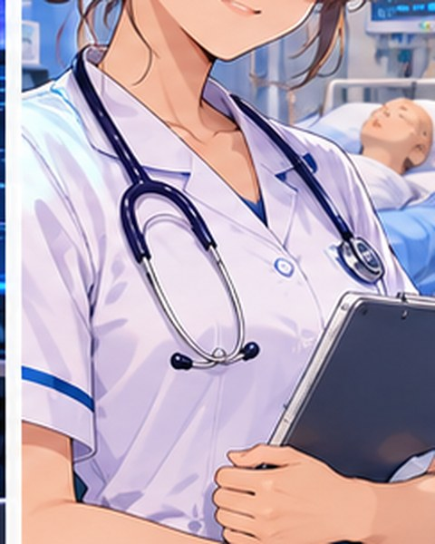
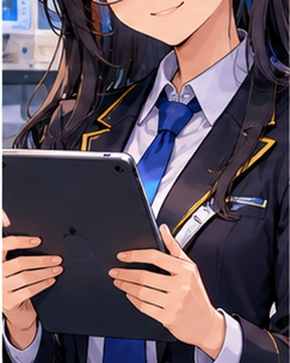
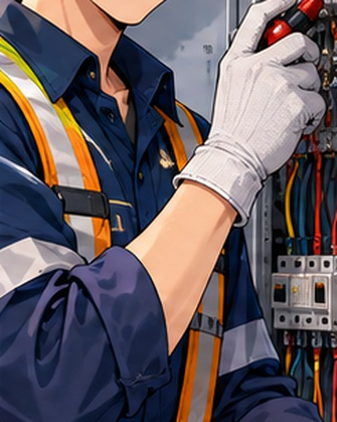
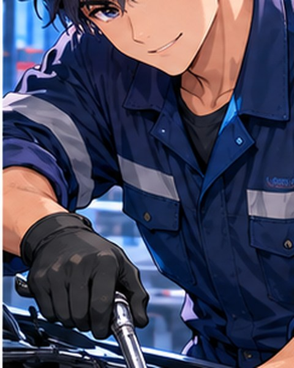
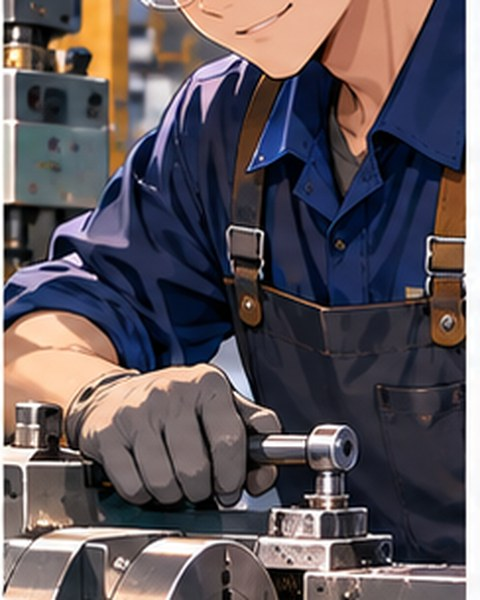

Consulta sílabos, aprende temas difíciles, organiza tus proyectos y encuentra orientación académica en un solo lugar.
Resuelve dudas académicas e institucionales. Escribe tu consulta o usa la voz.
Conoce la oferta académica del IESTP Manuel Seoane Corrales adaptada a las demandas del mercado laboral actual.
Conoce a los coordinadores publicados en la plana jerárquica institucional. Los avatares son ilustraciones anime representativas de cada especialidad, no retratos ni reproducciones de los docentes.





Accesos directos a páginas y documentos públicos del IESTP Manuel Seoane Corrales. SeoaIA te orienta, pero los requisitos y fechas vigentes se confirman en la fuente oficial.
Estos enlaces necesitan internet. Si estás sin conexión, SeoaIA mantiene disponibles las partes guardadas localmente, el test y la búsqueda básica de nombres de sílabos; no puede actualizar documentos oficiales en tiempo real.
Herramientas para estudiar, consultar y desarrollar proyectos con apoyo de SeoaIA.
Plataforma de videojuegos, torneos y comunidad gamer como proyecto de desarrollo web.
Web · Comunidad · TorneosPropuesta de sitio para una clínica dental, con información de servicios y orientación al paciente.
WordPress · Diseño webIdea de comunidad interna para compartir publicaciones, noticias y actividades por carrera.
Comunidad · PublicacionesEspacio para presentar iniciativas académicas, prototipos, ExpoTec y proyectos de las carreras. Los proyectos se muestran como iniciativas estudiantiles, no como servicios oficiales del instituto.
Convierte una tarea en un plan, prepara evaluaciones y redacta documentos en pocos pasos. La generación avanzada usa el proveedor de IA configurado en el servidor; no expone claves en el navegador.
No escribas contraseñas, DNI ni datos privados. Revisa la información generada antes de entregarla.
Tu resultado aparecerá aquí. Puedes copiarlo o guardarlo para continuar después.
Elige una actividad: descubre tus intereses vocacionales o practica con preguntas de cultura general.
Las preguntas nuevas se generan con IA cuando hay conexión. Sin conexión se usan preguntas guardadas en el proyecto.